Using public data can help improve the quality of your data analysis. It allows you to fill in any gaps in your data or to create more insights into your company’s data. We’ll show you how to go about getting data from a public source, and in particular how to integrate public data with our company’s data.
In this post, we’ll demonstrate a relevant example of this. We’ll look at a company selling a software product throughout the USA, and we’ll add population data from the US census bureau to identify the parts of the country where their product is most popular. Note that we will use Power BI to create our dataset and visualizations in this post, but the principles could also be applied to other software applications.
Step 1: Create an initial map
The company we are focusing on is a technology company that sells a software product throughout the USA. Most of the sales are made remotely, so the company has a national reach without having a network of offices around the country. The heat map below shows the sales revenue generated by state. States shaded in red have lower revenues while green states have higher revenues.
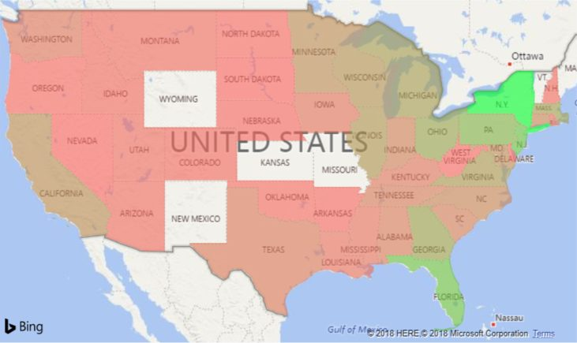
By the looks of this chart, our revenues are highest in New York state. The contrast in colours suggest none of the other states has a similar level of revenue. It looks as if the states with the highest revenues are all in the eastern half of the country.
This insight is somewhat useful in itself, but we should consider do we have high revenues in New York because the people there really like the product or is it just because the state has a high population. After all, it’s well known that heat maps like this can often reflect population densities and little else. We would like to adjust our heat map to account for the population size in the areas we are making sales. We’ll do this by importing population data from the US census bureau into Power BI and incorporating it into our analysis.
Step 2: Import additional data
Below we can see some of the sales dataset that we used to create the map above. Although we have created our heat map showing revenue by state, we can see that our dataset actually includes more detailed address information that shows the exact address of each company that we make a sale to. We are going to identify the population for the city in each transaction and add it to this dataset.
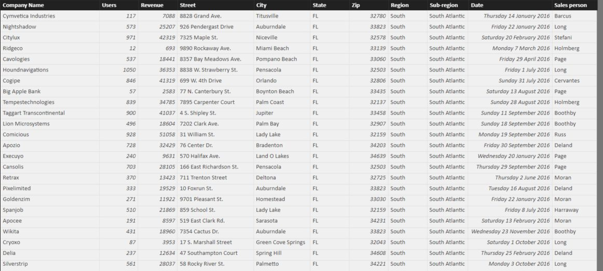
We can get data on population by city from the US census bureau at this page, where we download the dataset for incorporated places for the whole United States. Our sales data is from 2016 so we want to identify population by city for this year. Population by city is only measured at the official census every 10 years, however population estimates are provided annually, which is good enough for us. In this case, the data is downloaded as a csv file from the American Fact Finder, and when we bring it into Power BI through the Query Editor, it looks like this.
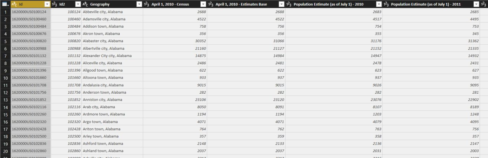
As we can see, the city name is included in the third column, called Geography. There are then a series of columns giving population estimates for 2010 to 2016. We need to reduce this column to show only the data we are interested in. The Query Editor is not the main focus of this post, so we won’t go through the steps in detail. The main steps involve removing the unnecessary columns, and splitting the geography column into a City column and a State Name column. We also remove unnecessary words like “city” and “town” that you can see in the Geography column. Finally, we removed a small number of duplicate records, where the same City and State combination appeared more than once. After these steps, the population data looks like this.
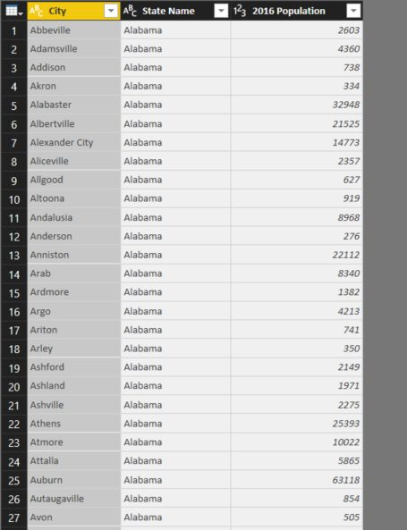
We’re going to match cities from the sales data to the population data by creating a column that contains the city name and state code. However, we have an issue. While our sales data contains the common two letter US state codes, the population data contains full state names. In order to match these up, we’ll introduce a third table to the model.
This table will be downloaded from the web, specifically from this Wikipedia page. Again, the page needs a little bit of cleaning in the Query Editor, mainly to remove unneeded rows and columns, but once that’s done, we get the table seen below.
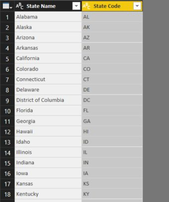
Once we have these new tables, we can import them into Power BI Desktop and start creating the data model.
Step 3: Set up the data model
Below we see the data model after we import the three tables into Power BI Desktop. Notice that a relationship has automatically been created between the population table and the State codes table, using the State Name field. No relationship has been created to the sales table. We’ll create a column in the population table and the sales table that will be used to create a relationship between these tables.
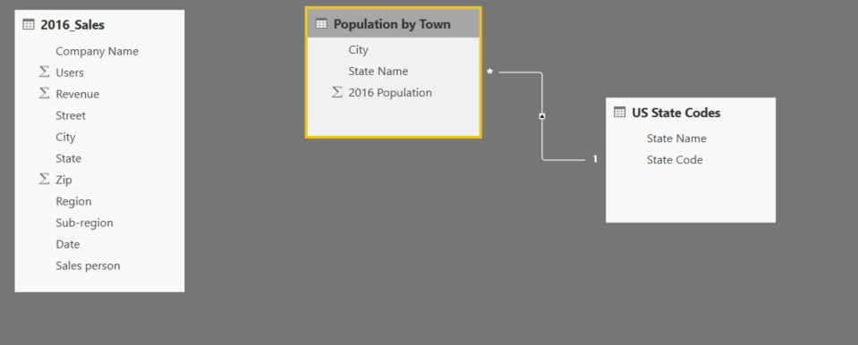
The City and State column is created by concatenating the city name and the state name, with a comma and space also included for formatting purposes. Below, we can see this column in the population table. Note that we also added a column containing the state codes to the population table, using the related function to get the state codes from the State Codes table.
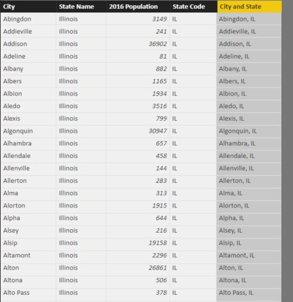
We then add a similar column to the Sales table, and use it to link the Sales table and the Population table. Once this relationship is set up, we add a new column to the sales table, that uses the related function to get the population of the relevant city. The data model will then look like the image below.
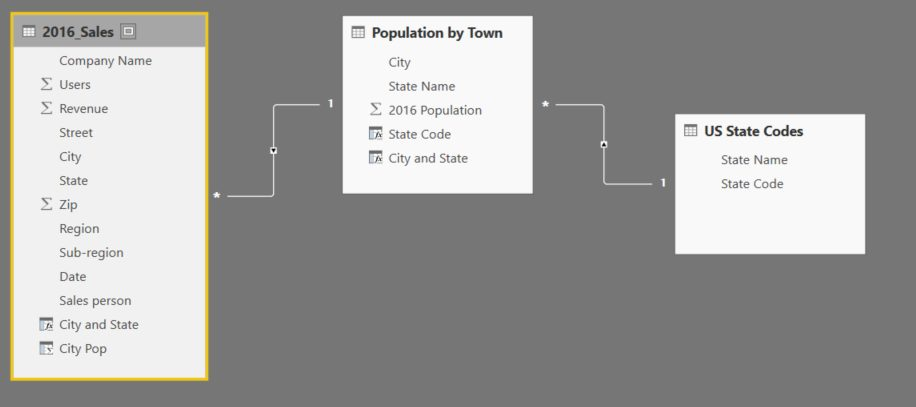
Step 4: Create new maps
Now that we have set up the data model, we can create a measure that adjusts sales revenue according to the population of the cities where the sales were recorded. We create a measure dividing the sum of revenue by the sum of the city population column from the sales table. When we create a map for each state, we will therefore get a measure which divides the revenue for that state by the population of the cities in that state where the sales occurred.
When we create a heat map of this measure, we get the following:
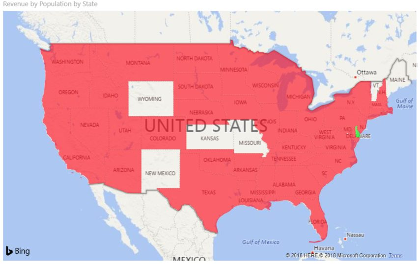
This is clearly not right. The issue is that Delaware, highlighted in green on the map above, has a value of infinity. This is because only one sales transaction took place in Delaware, and our population dataset does not have a value for the city where that one transaction took place. As a result, we add a filter that removes Delaware, and we get the following map, which is correct.
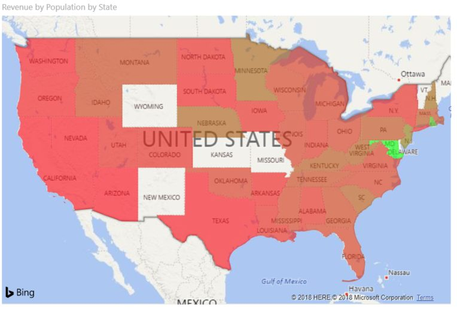
We can see here that Maryland generates the most revenues when we adjust for population size. Judging by the shading, it has a large margin over the other states in this regard. However, the general patterns we saw before seem to hold, that states in the eastern half of the country generate more revenue for the company, even when we adjust for population.
Let’s finish by visualising this in a different way. Below, we’ve created a table that ranks each state by its revenue, and by revenue adjusted by population. This will allow us to easily see which states perform differently by the two metrics.
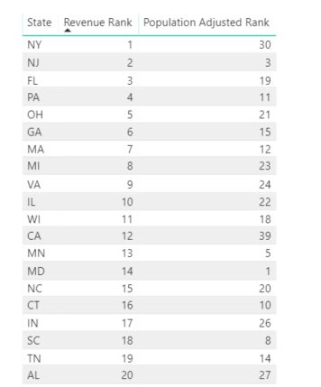
As we can see, New York (NY) may generate the most revenue overall, but when its large population is taken into account,its rank drops considerably. In fact, the ranking of most states drops when population is accounted for. By contrast, New Jersey (NJ) remains popular using both metrics. Therefore, it’s probably reasonable to say our product is actually more popular in New Jersey than New York.
Conclusion
In this post, we have seen how you can broaden your analytics by adding data from public, external sources. We have seen how adding population data can lead to some notable changes to our conclusions than we arrived at initially.
In this case, we have used a relatively simple example. The US census bureau, as well as other organisations like them around the world, provide highly extensive data. To give one example, you could identify income levels in specific areas and identify income levels in the areas you are selling into. This could help you identify whether you are selling your products to the sort of customers that you are looking to reach.